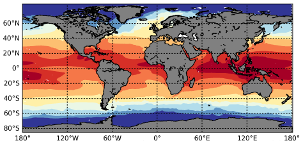

MPAS-Analysis
{kind=link}
Analysis for simulations produced with Model for Prediction Across Scales (MPAS) components and the Energy Exascale Earth System Model (E3SM), which used those components.
User's guide
- Quick Start Guide
- Installation for users
- Installation for developers
- Download analysis input data
- List Analysis
- Running the analysis
- List of MPAS output files that are needed by MPAS-Analysis:
- Purge Old Analysis
- Running in parallel via a queueing system
- Customizing plots or creating new ones
- Instructions for creating a new analysis task
- Generating Documentation
- Configuration
- Analysis Tasks
- climatologyMapAntarcticMelt
- climatologyMapArgoSalinity
- climatologyMapArgoTemperature
- climatologyMapBGC
- climatologyMapBSF
- climatologyMapCustom
- climatologyMapEKE
- climatologyMapHeatFluxes
- climatologyMapMassFluxes
- climatologyMapMLD
- climatologyMapMLDMinMax
- climatologyMapOHCAnomaly
- climatologyMapSchmidtko
- climatologyMapSose
- climatologyMapSST
- climatologyMapSSS
- climatologyMapSSH
- climatologyMapVel
- climatologyMapWaves
- climatologyMapWindStressCurl
- climatologyMapWoa
- antshipTransects
- conservation
- geojsonNetcdfTransects
- hovmollerOceanRegions
- indexNino34
- meridionalHeatTransport
- oceanHistogram
- oceanRegionalProfiles
- osnapTransects
- regionalTSDiagrams
- soseTransects
- streamfunctionMOC
- timeSeriesAntarcticMelt
- timeSeriesOHCAnomaly
- timeSeriesOceanRegions
- timeSeriesSalinityAnomaly
- timeSeriesSST
- timeSeriesTemperatureAnomaly
- timeSeriesTransport
- woaTransects
- woceTransects
- climatologyMapSeaIceAlbedoNH
- climatologyMapSeaIceAlbedoSH
- climatologyMapSeaIceAreaFractionRidgeNH
- climatologyMapSeaIceAreaFractionRidgeSH
- climatologyMapSeaIceAreaTendencyThermoNH
- climatologyMapSeaIceAreaTendencyThermoSH
- climatologyMapSeaIceAreaTendencyTranspNH
- climatologyMapSeaIceAreaTendencyTranspSH
- climatologyMapSeaIceConcNH
- climatologyMapSeaIceConcSH
- climatologyMapSeaIceMeltingNH
- climatologyMapSeaIceMeltingSH
- climatologyMapSeaIcePondAreaNH
- climatologyMapSeaIcePondAreaSH
- climatologyMapSeaIceProductionNH
- climatologyMapSeaIceProductionSH
- climatologyMapSeaIceSnowDepthNH
- climatologyMapSeaIceSnowDepthSH
- climatologyMapSeaIceSnowiceFormationNH
- climatologyMapSeaIceSnowiceFormationSH
- climatologyMapSeaIceSnowMeltNH
- climatologyMapSeaIceSnowMeltSH
- climatologyMapSeaIceThickNH
- climatologyMapSeaIceThickSH
- climatologyMapSeaIceVolumeRidgeNH
- climatologyMapSeaIceVolumeRidgeSH
- climatologyMapSeaIceVolumeTendencyThermoNH
- climatologyMapSeaIceVolumeTendencyThermoSH
- climatologyMapSeaIceVolumeTendencyTranspNH
- climatologyMapSeaIceVolumeTendencyTranspSH
- timeSeriesSeaIceAreaVol
- climatologyMapIcebergConcSH
- MPAS Components and E3SM
- Observations
Developer's guide
- Quick Start for Developers
- Building the Documentation
- Test Suite Infrastructure
- Releasing a New Version
- API reference
- Design Documents
- Generalized Horizontal Interpolation in MPAS-Analysis
- Config File Reorganization
- Reorganize Timekeeping
- Generalize Calendar supported by Analysis
- Moving variable mapping outside of mpas_xarray
- Support Parallel Tasks
- Remapper for “online” remapping of data sets
- Analysis Task Template
- Prerequisite Tasks and Subtasks
- Eddy Kinetic Energy Climatology Mapping
Tutorials
Authors